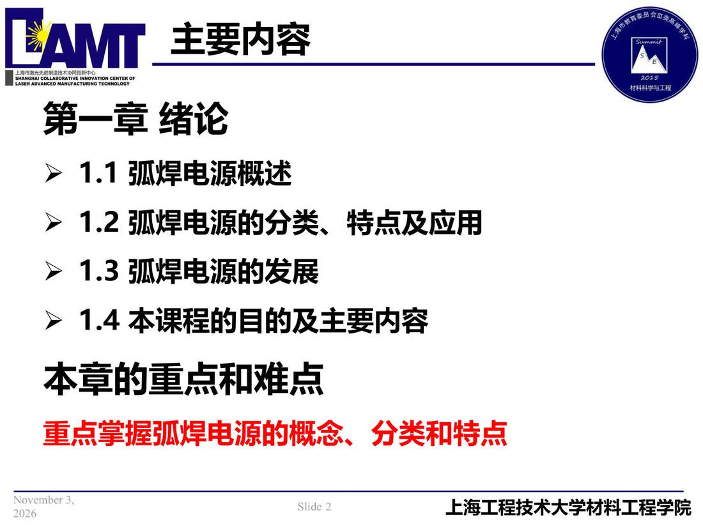

01 第1章 绪论/p002 1.1 弧焊电源概述p002 1.1 弧焊电源概述弧焊电源章/01类型/正文第 1 章幻灯片 2/273本章导览 📄 原文：📄 弧焊电源 课件（PDF 第 2 页）（幻灯片 2/273；PDF 第 2 页） 1.1 弧焊电源概述  讲义原文 第一章 绪论 1.2 弧焊电源的分类、特点及应用 1.3 弧焊电源的发展 1.4 本课程的目的及主要内容 本章的重点和难点 重点掌握弧焊电源的概念、分类和特点 本页标红（老师强调） 重点掌握弧焊电源的概念、分类和特点 关联 ← p001 · 本章索引 · p003 → 同组：本章导览 · 全章：绪论